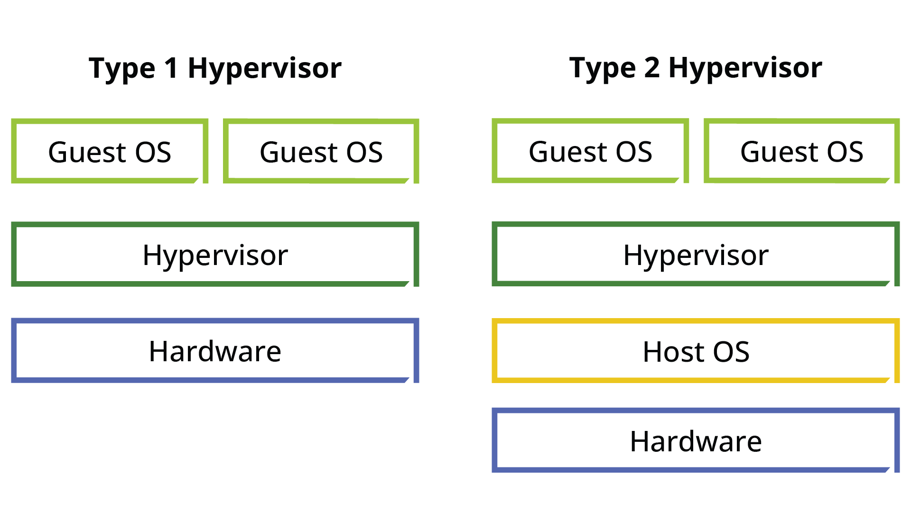
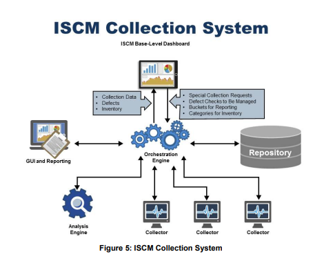

Operational application security requires controlling software
deployment and configuration baselines, verifying and validating the software in
production using continuous monitoring, and maintaining continuity efforts by
planning for incident response. Showing due care during operations using continued
assessment is essential for maintaining authorization.
Objectives
Review the implantation of secure operation processes.
Identify security considerations within the container life cycle.
Overview
Technology for software application deployment has changed over
time. When technology evolves it can often change security considerations throughout
the life cycle. Security practitioners must understand SDLC and security impacts
from operational process and technology shifts.
Deployment Environment
For our discussion, a deployment environment is the collective
consisting of various components including servers, operating systems, databases,
middleware, and any other component that is configured to collaborate and provide an
environment for hosting a software application.
Deployment of software is not free of risk, whether it takes
place in on-premises data centers or in the cloud. Service offerings from cloud
service providers (CSP) have given organizations the opportunity to rent virtualized
servers and associated service for running existing applications or developing and
testing new ones. It is no longer uncommon for an organization to have its
development, QA, staging, and production environment all as separate instances in
the cloud as part of minimizing their on-premises IT footprint. Regardless of whom
the hosting infrastructure belongs to, security controls of various types and nature
must be assured to protect against the threats to, and mitigate the risks of,
disclosure, tampering, and destruction of information assets.
Maintenance of the Deployment
Environment
Maintaining the security of the deployment/production
environment is crucial. Any risks to the environment must be identified and
analyzed, including those risks that may stem from:
Lack of redundancy mechanisms in place to address the availability requirements
Lack of secure configuration standards for various infrastructure components
that make up the production environment
Excessive physical access to the data centers or logical access to production
environment
Improper patch/update mechanisms that could cause disruptions
Improper segregation of production environment from nonproduction environments
Flawed change management processes
Insufficient logging and auditing
Insufficient documentation of the production environment
Virtualization and
Containerization
Operational software can be deployed using and/or . According to NIST,
virtualization is a methodology for emulation or abstraction of hardware resources
that enables complete execution stacks, including software applications, to run on
it. Basically, traditional hardware can be allocated to multiple virtual machines
(VMs) using an operating system called a hypervisor. There are two types of
hypervisors: Type I and Type II. A Type I hypervisor runs directly on computing
hardware while Type II relies on software to make a virtual layer.

Figure 12: Graphic of Type I and Type II Hypervisor
A VM is essentially an entire virtual computer—OS, CPU, memory,
storage, etc. In contrast, containerization is a lighter weight packaging of the
minimum dependencies and applications required to run a software—frameworks,
libraries, and software. This minimum packaging is isolated and modular by design.
VMs can be moved across hypervisors and underlying resources can generally be scaled
up or down as required. Containers may be moved across platforms and infrastructures
provided the contain orchestration software is available.
NIST SP 800-190—Application Container Security Guide
primarily describes core components of containerization, major risks, and
corresponding mitigation techniques. However, there is also guidance on the
container life cycle—creation, testing, and accreditation.
Initiation
Security practitioners should consider container impact on
security policies and posture and make adjustments to account for security gaps.
Incident response and forensic analysis polices will undoubtably be impacted.
Vulnerability management and assessment will need to be tailored for containers. New
processes and training can be considered to address any potential culture shock
introduced by the technology change.
Planning and Design
Containers are immutable by nature, which can improve forensic
analysis when accounted for properly within an organization’s continuity and
response efforts. This opportunity is directly related to a greater separation
between the OS and application software, which simplifies efforts.
Implementation
After a container is designed it should be tested prior to being
released for production. NIST SP 800-125—Guide to Security for Full
Virtualization Technologies outlines several infrastructure assessment
considerations that should occur before production containerization deployment:
New infrastructure without sunsetting preexisting infrastructure
is correlated with an increased organizational attack surface. New security tools
may be required to properly analyze the attack surface. Security controls and
technologies will also need to be adjusted (e.g., event logging, network logging).
To reduce potential negative impacts while minimizing risk use a phased deployment
of containers within the organization.
Operations and Maintenance
Operational security processes are equally important to app
security for containerization. Organizational container technology should be updated
and assessed regularly. Policies and procedures must be updated in conjunction with
technology maintenance. Container monitoring should be integrated with preexisting
security infrastructure such as security information and event management (SIEM)
tools to ensure reporting mechanisms are effective.
NIST SP 800-61—Computer Security Incident Handling Guide
applies to containerization and should be considered by security practitioners.
Incident response teams must be able to know the roles, owners, and sensitivity
levels of containers, and be able to integrate this data into processes. Regardless,
predefined procedures should describe response steps for container incidents.
Updating incident response plans is an integral part of maintenance.
Disposition
Containers can be instantiated and deprovisioned automatically
based on organizational needs. This is a strength for resource utilization and a
challenge for record retention and forensics. Organizations must ensure mechanisms
satisfy data retention policies. Data storage devices for containers must be
accounted for in organizational disposal plans.25
Systems seldom run in silos and without dependencies on other
software systems and processes upstream and downstream. System integration testing
must assure the verification of proper execution and functionality of software
components and interfaces between modules within the solution.
There are various areas of concern when it comes to system
integration. One example would be integration with legacy applications developed
using older technologies/frameworks that may not support certain features and
capabilities (e.g., SSO) resulting in the expansion of the attack surface and
presenting a new attack vector. Another example would be encrypted data exchanged
to/from downstream/upstream processes that would require exchange of encryption
keys; this could also introduce a weakness related to the key management processes.
Many more examples can be listed, but ultimately all such risks must be identified
and analyzed for proper handling.
Continuous Improvement
The quality, security, and resiliency of software products is
closely related to the overall software development process. This is evident in
Capability Maturity Model Integration (CMMI) developed by SEI, the multipart
standard from the International Security Organization, and ISO/IEC 27034, among many
more examples. What is common in all such frameworks or standards is the emphasis on
the need for the continuous process improvement.
Continuous improvements in SDLC processes are recommended
regardless of the software development processes used by the organization. Actual
implementation of how these improvements is made is affected by various factors,
including the development methodology that is adopted and the development team’s
culture, among other factors. One implementation method for continuous and
incremental improvements would be “Retrospectives” in Agile environments.
Continuous Monitoring (CM)
Information Security Continuous
Monitoring (ISCM)
is defined by NIST as “maintaining ongoing awareness of information
security, vulnerabilities, and threats to support organizational risk management
decisions.” The terms “continuous” and “ongoing” in this context mean that security
controls and organizational risks are assessed and analyzed at a frequency
sufficient to support risk-based security decisions to adequately protect
organization information.26
In NIST SP 800-137 Rev. 1, this is described as a disciplined
and structured process that integrates information security and risk management
activities into the system-development life cycle. Ongoing monitoring is a critical
part of that risk management process. In addition, an organization’s overall
security architecture and accompanying security program are monitored to ensure that
organization-wide operations remain within an acceptable level of risk, despite any
changes that occur. Timely, relevant, and accurate information is vital,
particularly when resources are limited, and organizations must prioritize their
efforts.
26 National Institute of Standards and Technology;
SP 800-137—Information Security Continuous Monitoring (ISCM) for Federal
Information Systems and Organizations;https://csrc.nist.gov/publications/detail/sp/800-137/final;
retrieved May 2023.

Figure 13: ISCM Collection System
The process of implementing ISCM is described follows:
Define the ISCM strategy
Establish an ISCM program
Implement the ISCM program
Analyze and report findings
Respond to findings
Review and update ISCM strategy and program
Verification and Validation
NIST SP 800-160 vol. 1 defines as the process of producing
objective evidence that sufficiently demonstrates that the system satisfies its
security requirements and security characteristics with the level of assurance that
applies to the system. Validation is the confirmation that requirements for a
specific intended use or application have been fulfilled and that the system, while
in use, fulfills its mission or business objectives while being able to provide
adequate protection for stakeholder and mission or business assets, minimize or
contain asset loss and associated consequences, and achieve its intended use in its
intended operational environment with the desired level of trustworthiness.
Trustworthy software is achieved by leveraging security
throughout the life cycle both operationally and from a secure software development
perspective. These efforts demonstrate security controls and assessment activities
that aid in the authorization process and support general engineering best practices.
Assessment and Authorization
(A&A)
NIST SP 800-37—Risk Management Framework for Information
Systems and Organizations: A System Life Cycle Approach for Security and Privacy
transitions certification and accreditation (C&A) language to DoD
Information Assurance Risk Management Framework (DIARMF) Assessment and
Authorization (A&A). NIST SP 800-37 encourages organizations to
leverage automation to increase effectiveness of executing the RMF process.
Assessment and continuous monitoring of controls can be matured by automation of
development pipelines using modern practices such as DevSecOps and modern
technologies such as virtualization and containerization. All this automation can
report and feed into a system authorization package that allows executives to make
timely decisions about the trustworthiness of the system.
Secure Operation Processes (2.9)
Operational application security requires controlling software deployment and configuration baselines, verifying and validating the software in production using continuous monitoring, and maintaining continuity efforts by planning for incident response. Showing due care during operations using continued assessment is essential for maintaining authorization.
Objectives
Overview
Technology for software application deployment has changed over time. When technology evolves it can often change security considerations throughout the life cycle. Security practitioners must understand SDLC and security impacts from operational process and technology shifts.
Deployment Environment
For our discussion, a deployment environment is the collective consisting of various components including servers, operating systems, databases, middleware, and any other component that is configured to collaborate and provide an environment for hosting a software application.
Deployment of software is not free of risk, whether it takes place in on-premises data centers or in the cloud. Service offerings from cloud service providers (CSP) have given organizations the opportunity to rent virtualized servers and associated service for running existing applications or developing and testing new ones. It is no longer uncommon for an organization to have its development, QA, staging, and production environment all as separate instances in the cloud as part of minimizing their on-premises IT footprint. Regardless of whom the hosting infrastructure belongs to, security controls of various types and nature must be assured to protect against the threats to, and mitigate the risks of, disclosure, tampering, and destruction of information assets.
Maintenance of the Deployment Environment
Maintaining the security of the deployment/production environment is crucial. Any risks to the environment must be identified and analyzed, including those risks that may stem from:
Virtualization and Containerization
Operational software can be deployed using and/or . According to NIST, virtualization is a methodology for emulation or abstraction of hardware resources that enables complete execution stacks, including software applications, to run on it. Basically, traditional hardware can be allocated to multiple virtual machines (VMs) using an operating system called a hypervisor. There are two types of hypervisors: Type I and Type II. A Type I hypervisor runs directly on computing hardware while Type II relies on software to make a virtual layer.
Figure 12: Graphic of Type I and Type II Hypervisor
A VM is essentially an entire virtual computer—OS, CPU, memory, storage, etc. In contrast, containerization is a lighter weight packaging of the minimum dependencies and applications required to run a software—frameworks, libraries, and software. This minimum packaging is isolated and modular by design. VMs can be moved across hypervisors and underlying resources can generally be scaled up or down as required. Containers may be moved across platforms and infrastructures provided the contain orchestration software is available.
Container Technology Life-Cycle Security Considerations
NIST SP 800-190—Application Container Security Guide primarily describes core components of containerization, major risks, and corresponding mitigation techniques. However, there is also guidance on the container life cycle—creation, testing, and accreditation.
Initiation
Security practitioners should consider container impact on security policies and posture and make adjustments to account for security gaps. Incident response and forensic analysis polices will undoubtably be impacted. Vulnerability management and assessment will need to be tailored for containers. New processes and training can be considered to address any potential culture shock introduced by the technology change.
Planning and Design
Containers are immutable by nature, which can improve forensic analysis when accounted for properly within an organization’s continuity and response efforts. This opportunity is directly related to a greater separation between the OS and application software, which simplifies efforts.
Implementation
After a container is designed it should be tested prior to being released for production. NIST SP 800-125—Guide to Security for Full Virtualization Technologies outlines several infrastructure assessment considerations that should occur before production containerization deployment:
New infrastructure without sunsetting preexisting infrastructure is correlated with an increased organizational attack surface. New security tools may be required to properly analyze the attack surface. Security controls and technologies will also need to be adjusted (e.g., event logging, network logging). To reduce potential negative impacts while minimizing risk use a phased deployment of containers within the organization.
Operations and Maintenance
Operational security processes are equally important to app security for containerization. Organizational container technology should be updated and assessed regularly. Policies and procedures must be updated in conjunction with technology maintenance. Container monitoring should be integrated with preexisting security infrastructure such as security information and event management (SIEM) tools to ensure reporting mechanisms are effective.
NIST SP 800-61—Computer Security Incident Handling Guide applies to containerization and should be considered by security practitioners. Incident response teams must be able to know the roles, owners, and sensitivity levels of containers, and be able to integrate this data into processes. Regardless, predefined procedures should describe response steps for container incidents. Updating incident response plans is an integral part of maintenance.
Disposition
Containers can be instantiated and deprovisioned automatically based on organizational needs. This is a strength for resource utilization and a challenge for record retention and forensics. Organizations must ensure mechanisms satisfy data retention policies. Data storage devices for containers must be accounted for in organizational disposal plans.25
25 National Institute of Standards and Technology; NIST Special Publication 800-190—Application Container Security Guide; https://nvlpubs.nist.gov/nistpubs/SpecialPublications/NIST.SP.800-190.pdf; retrieved May 2023.
System Integration
Systems seldom run in silos and without dependencies on other software systems and processes upstream and downstream. System integration testing must assure the verification of proper execution and functionality of software components and interfaces between modules within the solution.
There are various areas of concern when it comes to system integration. One example would be integration with legacy applications developed using older technologies/frameworks that may not support certain features and capabilities (e.g., SSO) resulting in the expansion of the attack surface and presenting a new attack vector. Another example would be encrypted data exchanged to/from downstream/upstream processes that would require exchange of encryption keys; this could also introduce a weakness related to the key management processes. Many more examples can be listed, but ultimately all such risks must be identified and analyzed for proper handling.
Continuous Improvement
The quality, security, and resiliency of software products is closely related to the overall software development process. This is evident in Capability Maturity Model Integration (CMMI) developed by SEI, the multipart standard from the International Security Organization, and ISO/IEC 27034, among many more examples. What is common in all such frameworks or standards is the emphasis on the need for the continuous process improvement.
Continuous improvements in SDLC processes are recommended regardless of the software development processes used by the organization. Actual implementation of how these improvements is made is affected by various factors, including the development methodology that is adopted and the development team’s culture, among other factors. One implementation method for continuous and incremental improvements would be “Retrospectives” in Agile environments.
Continuous Monitoring (CM)
Information Security Continuous Monitoring (ISCM)
is defined by NIST as “maintaining ongoing awareness of information security, vulnerabilities, and threats to support organizational risk management decisions.” The terms “continuous” and “ongoing” in this context mean that security controls and organizational risks are assessed and analyzed at a frequency sufficient to support risk-based security decisions to adequately protect organization information.26
In NIST SP 800-137 Rev. 1, this is described as a disciplined and structured process that integrates information security and risk management activities into the system-development life cycle. Ongoing monitoring is a critical part of that risk management process. In addition, an organization’s overall security architecture and accompanying security program are monitored to ensure that organization-wide operations remain within an acceptable level of risk, despite any changes that occur. Timely, relevant, and accurate information is vital, particularly when resources are limited, and organizations must prioritize their efforts.
26 National Institute of Standards and Technology; SP 800-137—Information Security Continuous Monitoring (ISCM) for Federal Information Systems and Organizations; https://csrc.nist.gov/publications/detail/sp/800-137/final; retrieved May 2023.
Figure 13: ISCM Collection System
The process of implementing ISCM is described follows:
Verification and Validation
NIST SP 800-160 vol. 1 defines as the process of producing objective evidence that sufficiently demonstrates that the system satisfies its security requirements and security characteristics with the level of assurance that applies to the system. Validation is the confirmation that requirements for a specific intended use or application have been fulfilled and that the system, while in use, fulfills its mission or business objectives while being able to provide adequate protection for stakeholder and mission or business assets, minimize or contain asset loss and associated consequences, and achieve its intended use in its intended operational environment with the desired level of trustworthiness.
Trustworthy software is achieved by leveraging security throughout the life cycle both operationally and from a secure software development perspective. These efforts demonstrate security controls and assessment activities that aid in the authorization process and support general engineering best practices.
Assessment and Authorization (A&A)
NIST SP 800-37—Risk Management Framework for Information Systems and Organizations: A System Life Cycle Approach for Security and Privacy transitions certification and accreditation (C&A) language to DoD Information Assurance Risk Management Framework (DIARMF) Assessment and Authorization (A&A). NIST SP 800-37 encourages organizations to leverage automation to increase effectiveness of executing the RMF process. Assessment and continuous monitoring of controls can be matured by automation of development pipelines using modern practices such as DevSecOps and modern technologies such as virtualization and containerization. All this automation can report and feed into a system authorization package that allows executives to make timely decisions about the trustworthiness of the system.